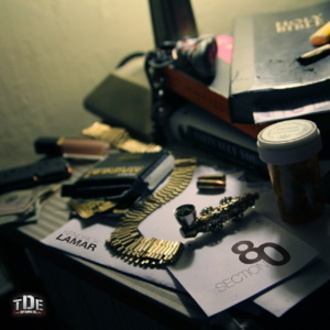
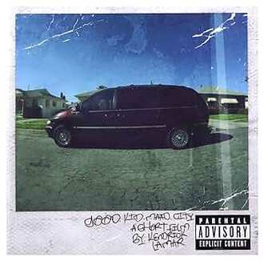
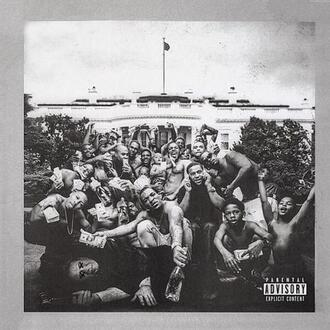
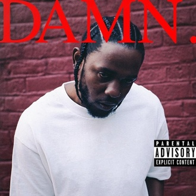

-
Section.80
Released: July 2, 2011
Section.80 é o primeiro álbum de estúdio do rapper americano Kendrick Lamar. Foi lançado em 2 de julho de 2011 pela Top Dawg Entertainment (TDE). Nos anos que antecederam seu lançamento, Lamar produziu anteriormente várias mixtapes sob o moniker K.Dot. Em 2010, Lamar lançou Overly Dedicated, seu quarto mixtape solo. Logo após seu lançamento, ele começou a trabalhar na Section.80.
-
Good Kid, M.A.A.D City
Released: October 22, 2012
good kid, m.A.A.d city é o segundo álbum de estúdio do rapper norte-americano Kendrick Lamar lançado em 22 de outubro de 2012 pela Top Dawg Entertainment, Aftermath Entertainment, e distribuído pela Interscope Records.
-
To Pimp a Butterfly
Released: March 16, 2015
"To Pimp a Butterfly" é o terceiro álbum de estúdio do rapper estadunidense Kendrick Lamar. O álbum foi lançado em 15 de março de 2015, pelas editoras discográficas Top Dawg Entertainment, Aftermath Entertainment, e distribuído pela Interscope Records.
-
DAMM.
Released: April 14, 2017
DAMN. é o quarto álbum de estúdio do rapper estadunidense Kendrick Lamar. Foi lançado em 14 de abril de 2017, pelas editoras discográficas Top Dawg Entertainment, Aftermath Entertainment e Interscope Records. O disco teve a produção executiva executada por Anthony "Top Dawg" Tiffith, Dr. Dre, Sounwave, DJ Dahi, Mike Will Made It e Ricci Riera.
-
Mr. Morale & the Big Steppers
Released: May 13, 2022
Morale & the Big Steppers é o quinto álbum de estúdio do rapper americano Kendrick Lamar, lançado em 13 de maio de 2022 pela PGLang, Top Dawg Entertainment, Aftermath Entertainment e Interscope Records. É o primeiro álbum completo de Lamar desde a trilha sonora de Pantera Negra (2018), e seu primeiro álbum solo de estúdio desde Damn (2017). O álbum duplo serve como seu projeto final com Top Dawg. Após seu lançamento, o álbum recebeu aclamação universal da crítica.